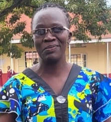
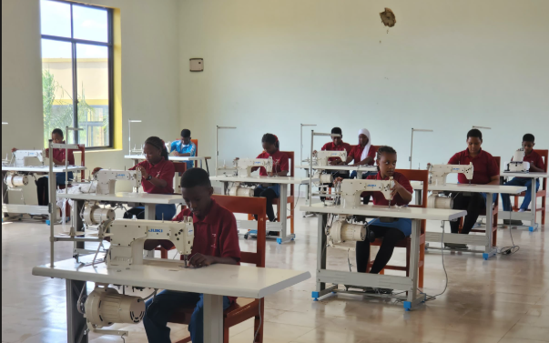
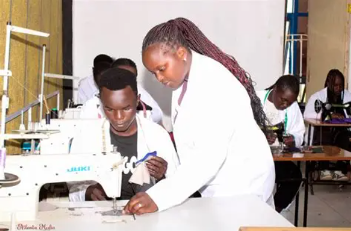
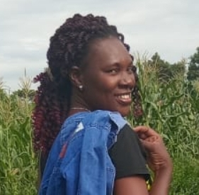
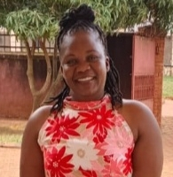

ABOUT STITCH OF HOPE
A second chance through practical skills.
Learn about our vision, mission, location and commitment to inclusive vocational training.
ABOUT THE CENTRE
A second chance through practical skills.
Stitch of Hope Tailoring & Fashion Design is established at Odokomit Trading Centre, Lira City West Division, Lira City, Northern Uganda. The Centre combines vocational training with mentorship, start-up support and enterprise development.
The initiative is grounded in lived experience and a commitment to giving vulnerable young people practical tools to rebuild their lives and achieve financial independence.
Our Vision
A Northern Uganda where every teenage mother, school dropout, and person with a disability has the skills and confidence to earn a dignified living.
Our Mission
To provide accessible, practical training, mentorship, and start-up support that enable beneficiaries to achieve financial independence.
INSIDE THE CENTRE
Learning through making.




OUR FOUNDERS
A team committed to the mission.

Nabuchiga Winnie
Co-Founder & Lead Trainer
Animo Patricia
Finance Admin
Okwanga Joseph
Founder